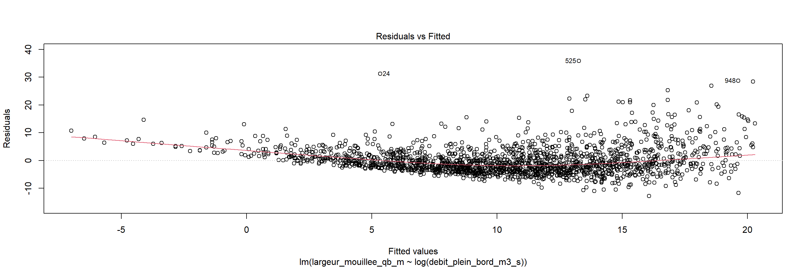
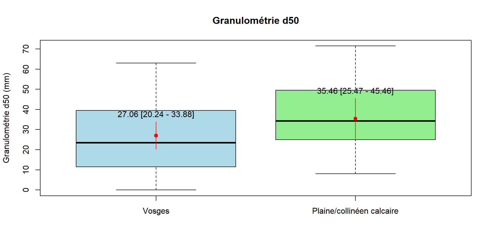
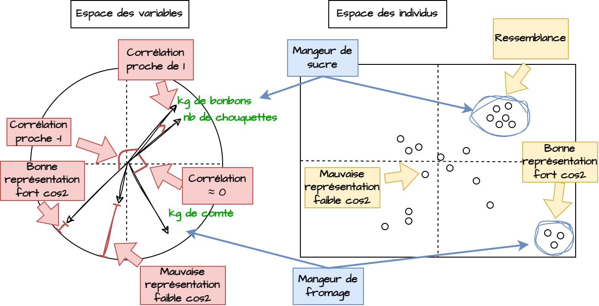
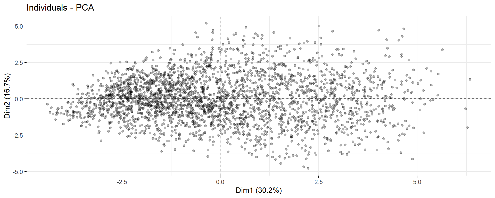

Statistiques et data mining
Master Hydrosystèmes et Bassins Versants
Université de Tours
2024-09-12
Introduction
Les statistiques
L’ensemble des méthodes qui ont pour objet la collecte, le traitement et l’interprétation de données d’observation relatives à un groupe d’individus ou d’unités.
- Statistique descriptive : Décrire, résumer, visualiser des données.
- Statistique inférentielle (Inférence statistique) : induire des caractéristiques sur une population à partir d’un échantillon (relation, distribution).
Population ou échantillon ?
- Population : ensemble des individus ou unités statistiques sur lesquels on veut faire des observations.
- Echantillon : sous-ensemble de la population, choisi de manière aléatoire ou non, qui permet de faire des observations.
Sélection de tous les bruns de la salle, population ou échantillon ?
Le data mining
L’exploration et l’analyse de base de données pour le résumer, détecter des règles, des tendances, des associations ou des structures particulières. L’exploration des bases de données existantes en géosciences peut être utilisée pour détecter des nouvelles tendances ou comportements dans des milieux ou bien préparer une étude avant de une campagne de mesure.
Objectifs du cours
Apprendre à décrire un jeu de données, le synthétiser pour mettre en évidence les informations pertinentes qu’il contient et ses limites pour répondre à certaines questions.
Pourvoir créer de nouvelles informations à partir de relations ou comportements identifiés dans les données. Utiliser ces informations pour prédire de nouvelles données et identifier communauté d’individus communs ou différents.
Acquérir des outils de manipulation, description et d’analyse de données.
Avoir une démarche critique sur les données, les outils statistiques et les résultats obtenus.
R et RStudio
- Un logiciel et language de développement très complet, gratuit et open source avec une communauté active.
- Permet de reproduire et partager facilement les analyses.
- Un début apprentissage un peu plus difficile que des logiciels “clé en main”.
 1
1
Ressources
- Analyse-R, Joseph Larmarange - Université Paris Cité, IRD
- Guide-R, Joseph Larmarange - Université Paris Cité, IRD
- Grimoire, Lise Vaudor, CNRS
- Cours d’Eric Marcon, Agro Paris Tech
- Cours d’Antoine Massé, IUT de Bordeaux
- R for datascience, Hadley Wickham, Mine Çetinkaya-Rundel, and Garrett Grolemund
- Formation ministérielle à R et aux sciences des données
- Data Mining et Statistique décisionnelle (2017), Stéphane Tufféry, Editions Technip
- Vidéos d’Eric Lombardot - Université Paris 1 Panthéon Sorbonne
- Logiciel Jamovi
- Logiciel Rattle
Plan du cours
Introduction
- Statistiques univariées
- Statistiques bivariées
- La comapraison de jeux de données
- Statistiques multivariées ou multimentionnelles
- Classification
Données utilisées
- Données hydromorphologiques issus du protocole CARHYCE (Agence Française de la Biodiversité), disponible sur IED CARHYCE
- Mesure de morphologie du lit, de granulométrie, de débit et de ripisylve.
- Des données enrichies par des estimations à plein bord et les surfaces des bassins versant.
- Plus de 2000 stations de mesures.
Installation des (nombreux?) packages
Importons les pakages du cours
library(ggplot2) # Graphics
library(dplyr) # Data manipulation
library(tidyr) # Data cleaning
library(tibble) # Table visualisation
library(janitor) # Column names cleaning
library(skimr) # Data summary
library(dataMaid) # Data report
library(plotly) # Interactive plots
library(e1071) # Skewness
library(gmodels) # Contingency tables
library(ggpmisc) # Regression line
library(nortest) # Normality tests
library(FactoMineR) # Factorial analysis
library(factoextra) # Factorial analysis
library(gtsummary) # Regression summary
library(explor) # Data exploration
library(boot) # Bootstrap
library(qqplotr) # QQ-plotExplorons le jeu de données
# A tibble: 6 × 93
Identifiant.opération Localisation.station.de.mes…¹ Code.station X Y
<int> <chr> <int> <dbl> <dbl>
1 1 L'HELPE MAJEURE À EPPE SAUVA… 1001122 784154 7.00e6
2 2 L'HELPE MINEURE À MAROILLES … 1006000 757929 7.00e6
3 3 LA SAMBRE RIVIÈRE À BERGUES … 1009300 751051 6.99e6
4 4 L'ESCAUT RIVIÈRE À CRÉVECOEU… 1010000 717769 7.00e6
5 5 LA CLARENCE À CHOCQUES (62) 1069000 669615 7.05e6
6 6 L'YSER À BAMBECQUE (59) 1089000 668113 7.09e6
# ℹ abbreviated name: ¹Localisation.station.de.mesure
# ℹ 88 more variables: Identifiant.point.prélèvement <int>,
# Date.réalisation <chr>, Débit.mesuré..m3.s. <dbl>,
# Débit.station.hydro..m3.s. <dbl>, Distance.interpoint..m. <dbl>,
# Largeur.plein.bord.évaluée..m. <dbl>, Largeur.mouillée.évaluée..m. <dbl>,
# Longueur.réelle.opération..m. <dbl>,
# Longueur.théorique.opération..m. <dbl>, Pente.ligne.d.eau.... <dbl>, …Dimensions et variables
'data.frame': 4339 obs. of 93 variables:
$ Identifiant.opération : int 1 2 3 4 5 6 7 8 9 10 ...
$ Localisation.station.de.mesure : chr "L'HELPE MAJEURE À EPPE SAUVAGE (59)" "L'HELPE MINEURE À MAROILLES (59)" "LA SAMBRE RIVIÈRE À BERGUES SUR SAMBRE (02)" "L'ESCAUT RIVIÈRE À CRÉVECOEUR SUR ESCAUT (59)" ...
$ Code.station : int 1001122 1006000 1009300 1010000 1069000 1089000 1090000 1092000 1115000 1116000 ...
$ X : num 784154 757929 751051 717769 669615 ...
$ Y : num 7002804 7002371 6993135 7000673 7048933 ...
$ Identifiant.point.prélèvement : int 165938 165945 165948 165949 165974 165978 165979 165981 165993 165994 ...
$ Date.réalisation : chr "2009-08-19" "2009-09-17" "2009-07-08" "2009-07-01" ...
$ Débit.mesuré..m3.s. : num 0.148 0.272 0.017 1.007 0.358 ...
$ Débit.station.hydro..m3.s. : num 0.615 0.871 0.111 NA 0.473 0.164 0.1 0.669 0.417 NA ...
$ Distance.interpoint..m. : num 0.7 1.1 0.55 0.7 0.8 0.75 0.7 0.95 1.2 0.6 ...
$ Largeur.plein.bord.évaluée..m. : num 9.63 15 7 14.2 8.07 ...
$ Largeur.mouillée.évaluée..m. : num 4.7 8.13 3.82 4.9 5.46 5.3 4.85 6.6 8.28 3.98 ...
$ Longueur.réelle.opération..m. : num 133 210 100 199 113 ...
$ Longueur.théorique.opération..m. : num 135 210 98 199 113 ...
$ Pente.ligne.d.eau.... : num 4.06 1.43 4.7 3.2 0.88 1.33 5.3 1.6 3.82 3.93 ...
$ Pente.ligne.d.eau.évaluée : num NA NA NA NA NA NA NA NA NA NA ...
$ Description.habitat.marginaux : chr "" "" "" "" ...
$ Continuité.ripisylve.rive.gauche : chr "continue" "isolée" "semi-continue" "bosquets éparses" ...
$ Continuité.ripisylve.rive.droite : chr "bosquets éparses" "espacée-régulière" "bosquets éparses" "bosquets éparses" ...
$ Nom.réseau.de.mesure : chr NA NA NA NA ...
$ Observations : chr "Depuis la RG" "De la rive gauche (A1) à la rive droite (A4)" "Depuis la RG" "" ...
$ Version.protocole : chr "2009 (Pré-déploiement)" "2009 (Pré-déploiement)" "2009 (Pré-déploiement)" "2009 (Pré-déploiement)" ...
$ Structure.responsable : chr "OFFICE FRANCAIS DE LA BIODIVERSITE" "OFFICE FRANCAIS DE LA BIODIVERSITE" "OFFICE FRANCAIS DE LA BIODIVERSITE" "OFFICE FRANCAIS DE LA BIODIVERSITE" ...
$ Cours.d.eau : chr "Helpe majeure" "Helpe mineure" "Sambre" "Escaut" ...
$ Nombre.transect : int 15 15 15 15 15 15 15 15 17 15 ...
$ D16..mm. : num 18 16.8 18 23 33 ...
$ D50..mm. : num 29.5 34.5 28.5 65.5 50 49 97 34 38 30 ...
$ D84..mm. : num 53 50.2 46 105.2 75.3 ...
$ Indice.Folk.et.Ward : num 0.783 0.786 0.736 1.086 0.627 ...
$ Indice.Fredle : num 21.3 19.9 20.8 29.7 37 ...
$ Surface.mouillée.Q1..m2. : num 1.56 2.49 0.59 2.82 1.72 ...
$ Largeur.mouillée.Q1..m. : num 4.77 9.13 2.98 5.64 4.71 ...
$ Périmètre.mouillé.Q1..m. : num 5.08 9.29 3.15 6.1 4.94 ...
$ Profondeur.maximum.Q1..m. : num 0.451 0.444 0.32 0.792 0.527 0.571 0.431 0.664 0.397 0.433 ...
$ Profondeur.moyenne.Q1..m. : num 0.311 0.281 0.202 0.5 0.365 0.341 0.279 0.389 0.241 0.315 ...
$ Rayon.hydraulique.Q1 : num 0.281 0.275 0.185 0.459 0.348 0.318 0.261 0.371 0.234 0.287 ...
$ Rapport.largeur.Profondeur.Q1 : num 16.57 28.59 12.02 7.45 9.08 ...
$ Coefficient.rugosité : num 3.47 6.82 1.29 10.61 14.17 ...
$ Surface.mouillée.Qb..m2. : num 10.02 37.33 5.75 15.99 8.53 ...
$ Largeur.mouillée.Qb..m. : num 8.62 15.77 6.62 13.06 7.5 ...
$ Périmètre.mouillé.Qb..m. : num 9.8 18.37 7.63 14.28 8.59 ...
$ Profondeur.maximum.Qb..m. : num 1.7 3.17 1.45 2.16 1.66 ...
$ Profondeur.moyenne.Qb..m. : num 1.163 2.371 0.873 1.227 1.148 ...
$ Rayon.hydraulique.Qb : num 1.016 2.035 0.757 1.123 0.998 ...
$ Rapport.largeur.Profondeur.Qb : num 5.2 5.01 4.63 6.05 4.5 ...
$ Force.tractrice.Qb...N.m2. : num 40.45 28.55 34.91 35.26 8.62 ...
$ Débit.plein.bord..m3.s. : num 2.242 15.452 0.423 10.373 3.581 ...
$ Ecart.type.cote.point : num 0.68 1.184 0.594 0.738 0.671 ...
$ Coefficient.variation.cote.point : num 0.007 0.012 0.006 0.007 0.007 0.012 0.011 0.017 0.006 0.006 ...
$ Ecart.type.cote.point.en.eau : num 0.322 0.2 0.151 0.234 0.162 0.241 0.215 0.282 0.197 0.137 ...
$ Coefficient.variation.cote.point.en.eau : num 0.969 0.736 0.788 0.449 0.446 0.706 0.802 0.762 0.86 0.427 ...
$ Ecart.type.largeur.mouillée.Qb : num 1.28 1.68 1 1.4 1.12 ...
$ Coefficient.variation.largeur.mouillée.Qb : num 0.148 0.106 0.151 0.107 0.15 0.091 0.088 0.119 0.165 0.172 ...
$ Vitesse.moyenne.Qb..m.s. : num 0.234 0.418 0.075 0.658 0.424 0.027 0.215 0.756 0.52 0.636 ...
$ Ligne.énergie.Qb..m. : num 1.71 3.18 1.45 2.19 1.68 ...
$ Cote.ligne.énergie.Qb : num 101 103 101 101 101 ...
$ Nombre.de.Froude.Qb : num 0.071 0.087 0.026 0.191 0.127 0.006 0.053 0.143 0.154 0.213 ...
$ Puissance.spécifique.Qb..w.m2. : num 10.56 13.88 3 25.2 4.21 ...
$ Nombre.de.mouille : int 4 4 3 3 3 3 3 4 3 4 ...
$ Profondeur.moyenne.des.mouilles..m. : num 0.439 0.25 0.247 0.165 0.086 0.558 0.199 0.362 0.331 0.117 ...
$ Nombre.de.berges.total : int 30 30 30 30 30 30 30 30 34 30 ...
$ Nombre.de.berges.artificialisées : int 0 4 0 0 0 16 0 0 15 2 ...
$ Score.ripisylve : num NA 0.043 0.101 0.188 0.39 0.029 0.39 0.087 0.35 NA ...
$ Classe.ripisylve : int 3 4 1 4 4 1 3 4 4 3 ...
$ X..fines : num 5.56 16.13 23.86 63.02 53.12 ...
$ X..graviers.cailloux : num 86.1 76.6 75 29.4 43.8 ...
$ X..blocs.rochers : num 8.33 7.26 1.14 7.56 3.12 ...
$ Indice.de.Shannon.granulo : num 1.73 1.9 1.74 1.73 1.94 ...
$ Surface.BV..km2. : num 75.1 248.7 20.5 399.6 80.9 ...
$ Proportion.de.roche.imperméable.BV : num 0.004 0.097 0 0 0.054 1 0.033 0 0.076 0 ...
$ Code.HER.ou.DOM.dominant : int 22 20 20 9 9 20 9 9 9 9 ...
$ Nom.HER.ou.DOM.dominant : chr "ARDENNES" "DEPOTS ARGILO SABLEUX" "DEPOTS ARGILO SABLEUX" "TABLES CALCAIRES" ...
$ Type.DOM : int 0 0 0 0 0 0 0 0 0 0 ...
$ Coefficient.de.sinuosité : num NA 1.17 1.18 1.01 1.07 1.11 1.28 1.17 1.01 1.2 ...
$ Débit.Q01.RHT..m3.s. : num NA 11.07 1.22 14.58 2.39 ...
$ Puissance.Q01.RHT..w.m. : num NA 155.3 56 457.7 20.6 ...
$ Puissance.spécifique.Q01.RHT..w.m2. : num NA 9.85 8.46 35.05 2.75 ...
$ Station.référence.modèle : int 0 0 0 1 0 0 0 0 0 0 ...
$ Résidu.modèle.Largeur.mouillée.Qb : num 0.025 0.174 0.17 -0.029 -0.097 0.101 0.462 0.74 0.141 -0.417 ...
$ Résidu.modèle.rapport.largeur.profondeur.Qb : num -0.331 -0.177 -0.081 -0.286 -0.429 -0.262 -0.504 -0.518 0.019 -0.54 ...
$ Résidu.modèle.profondeur.mouilles : num 0.75 0.332 0.618 -0.344 -0.821 ...
$ Résidu.modèle.profondeur.Qb : num 0.349 0.35 0.246 0.228 0.299 ...
$ Résidu.modèle.pente.ligne.d.eau : num 0.349 0.556 0.233 0.906 -1.071 ...
$ Résidu.modèle.surface.mouillée.Qb : num 0.393 0.575 0.309 0.029 0.241 ...
$ Résidu.standardisé.modèle.largeur.mouillée.Qb : num 0.178 0.402 0.389 -0.112 -0.371 ...
$ Résidu.standardisé.modèle.rapport.largeur.profondeur.Qb: num -1.291 -0.685 -0.372 -0.749 -1.126 ...
$ Résidu.standardisé.modèle.profondeur.mouilles : num 1.839 0.208 0.495 -0.729 -1.74 ...
$ Résidu.standardisé.modèle.profondeur.Qb : num 1.595 0.823 0.555 0.67 0.879 ...
$ Résidu.standardisé.modèle.pente.ligne.d.eau : num 0.169 0.67 0.162 1.125 -1.33 ...
$ Résidu.standardisé.modèle.surface.mouillée.Qb : num 1.239 0.884 0.393 0.065 0.532 ...
$ IMG : num 6.31 3.67 2.37 3.45 5.98 ...
$ Modèle.référence.IMG : chr "Colinéen Est" "Plaine/collinéen détritique" "Plaine/collinéen détritique" "TABLES CALCAIRES" ...
$ Classe.écart.IMG : chr "moyen" "tres faible" "tres faible" "tres faible" ...
NULLLes données quantitatives
 1
1
Les données qualitatives
1
Nettoyage des colonnes
# clean column names with janitor
carhyce <- carhyce_brute %>% # %>% = pipe operator from dplyr |> for native pipe
clean_names() # clean column names
print(names(carhyce)) [1] "identifiant_operation"
[2] "localisation_station_de_mesure"
[3] "code_station"
[4] "x"
[5] "y"
[6] "identifiant_point_prelevement"
[7] "date_realisation"
[8] "debit_mesure_m3_s"
[9] "debit_station_hydro_m3_s"
[10] "distance_interpoint_m"
[11] "largeur_plein_bord_evaluee_m"
[12] "largeur_mouillee_evaluee_m"
[13] "longueur_reelle_operation_m"
[14] "longueur_theorique_operation_m"
[15] "pente_ligne_d_eau"
[16] "pente_ligne_d_eau_evaluee"
[17] "description_habitat_marginaux"
[18] "continuite_ripisylve_rive_gauche"
[19] "continuite_ripisylve_rive_droite"
[20] "nom_reseau_de_mesure"
[21] "observations"
[22] "version_protocole"
[23] "structure_responsable"
[24] "cours_d_eau"
[25] "nombre_transect"
[26] "d16_mm"
[27] "d50_mm"
[28] "d84_mm"
[29] "indice_folk_et_ward"
[30] "indice_fredle"
[31] "surface_mouillee_q1_m2"
[32] "largeur_mouillee_q1_m"
[33] "perimetre_mouille_q1_m"
[34] "profondeur_maximum_q1_m"
[35] "profondeur_moyenne_q1_m"
[36] "rayon_hydraulique_q1"
[37] "rapport_largeur_profondeur_q1"
[38] "coefficient_rugosite"
[39] "surface_mouillee_qb_m2"
[40] "largeur_mouillee_qb_m"
[41] "perimetre_mouille_qb_m"
[42] "profondeur_maximum_qb_m"
[43] "profondeur_moyenne_qb_m"
[44] "rayon_hydraulique_qb"
[45] "rapport_largeur_profondeur_qb"
[46] "force_tractrice_qb_n_m2"
[47] "debit_plein_bord_m3_s"
[48] "ecart_type_cote_point"
[49] "coefficient_variation_cote_point"
[50] "ecart_type_cote_point_en_eau"
[51] "coefficient_variation_cote_point_en_eau"
[52] "ecart_type_largeur_mouillee_qb"
[53] "coefficient_variation_largeur_mouillee_qb"
[54] "vitesse_moyenne_qb_m_s"
[55] "ligne_energie_qb_m"
[56] "cote_ligne_energie_qb"
[57] "nombre_de_froude_qb"
[58] "puissance_specifique_qb_w_m2"
[59] "nombre_de_mouille"
[60] "profondeur_moyenne_des_mouilles_m"
[61] "nombre_de_berges_total"
[62] "nombre_de_berges_artificialisees"
[63] "score_ripisylve"
[64] "classe_ripisylve"
[65] "x_fines"
[66] "x_graviers_cailloux"
[67] "x_blocs_rochers"
[68] "indice_de_shannon_granulo"
[69] "surface_bv_km2"
[70] "proportion_de_roche_impermeable_bv"
[71] "code_her_ou_dom_dominant"
[72] "nom_her_ou_dom_dominant"
[73] "type_dom"
[74] "coefficient_de_sinuosite"
[75] "debit_q01_rht_m3_s"
[76] "puissance_q01_rht_w_m"
[77] "puissance_specifique_q01_rht_w_m2"
[78] "station_reference_modele"
[79] "residu_modele_largeur_mouillee_qb"
[80] "residu_modele_rapport_largeur_profondeur_qb"
[81] "residu_modele_profondeur_mouilles"
[82] "residu_modele_profondeur_qb"
[83] "residu_modele_pente_ligne_d_eau"
[84] "residu_modele_surface_mouillee_qb"
[85] "residu_standardise_modele_largeur_mouillee_qb"
[86] "residu_standardise_modele_rapport_largeur_profondeur_qb"
[87] "residu_standardise_modele_profondeur_mouilles"
[88] "residu_standardise_modele_profondeur_qb"
[89] "residu_standardise_modele_pente_ligne_d_eau"
[90] "residu_standardise_modele_surface_mouillee_qb"
[91] "img"
[92] "modele_reference_img"
[93] "classe_ecart_img" Statistiques univariées
Objectifs
- Description des types de variables
- Analyse de la distribution (graphiques et paramètres)
- Discrétisation de variables quantitatives
- Détection et traitement des valeurs extrêmes
- Comparaison à la loi normale
nettoyage des lignes et sélection des variables
carhyce_stat <- carhyce %>%
group_by(code_station) %>% # group by station
filter(date_realisation == max(date_realisation)) %>% # select the last date
ungroup() %>% # ungroup data
select(surface_bv_km2, continuite_ripisylve_rive_gauche,
continuite_ripisylve_rive_droite, classe_ripisylve,
nom_her_ou_dom_dominant, debit_plein_bord_m3_s,
largeur_mouillee_qb_m) # select columns
print(head(carhyce_stat))# A tibble: 6 × 7
surface_bv_km2 continuite_ripisylve_…¹ continuite_ripisylve…² classe_ripisylve
<dbl> <chr> <chr> <int>
1 75.1 continue bosquets éparses 3
2 400. bosquets éparses bosquets éparses 4
3 128. semi-continue bosquets éparses 4
4 102. semi-continue absence 3
5 771. semi-continue bosquets éparses 3
6 175. semi-continue isolée 3
# ℹ abbreviated names: ¹continuite_ripisylve_rive_gauche,
# ²continuite_ripisylve_rive_droite
# ℹ 3 more variables: nom_her_ou_dom_dominant <chr>,
# debit_plein_bord_m3_s <dbl>, largeur_mouillee_qb_m <dbl>Synthèse analyses univariées
Distribution des bassins versants des stations
Min. 1st Qu. Median Mean 3rd Qu. Max. NA's
0.00 20.96 73.29 380.30 202.72 71139.83 1 

Discrétiser une variable quantitative
Règle de Sturges : méthode de détermination du nombre de classes à utiliser dans un histogramme => avoir un nombre de classes qui soit à la fois suffisamment grand pour capturer la structure de la distribution des données, mais pas trop grand pour ne pas perdre de sensibilité dans la visualisation.
En pratique, il est souvent recommandé de tester plusieurs nombres de classes et de choisir celui qui offre la meilleure représentation visuelle des données tout en préservant leur structure.
Autres méthodes :
- Effectifs égaux : par exemple les quantiles
- Intervalles égaux : par exemple une classe toute les X unités
- Par seuil de valeurs : par exemple les classes de granulométrie
Discrétisation “manuelle” par la règle de Sturges
Changement de discrétisation et outliers
Les outliers
- Valeurs extrêmes qui ne suivent pas la distribution générale des données.
- Peuvent être des erreurs de mesure, des valeurs aberrantes ou des valeurs extrêmes.
- Peuvent fausser les résultats des analyses statistiques qui ne seront plus représentatives de la population.
- Rend la lecture et l’interprétation des graphiques difficiles.
Retrait des valeurs extrêmes
# Histogram with normal curve
h <- hist(carhyce_stat$surface_bv_km2, col = "lightblue",
main = "Surface des bassins versants",
xlab = "Surface de bassins versants (km2)")
xfit <- seq(min(carhyce_stat$surface_bv_km2),
max(carhyce_stat$surface_bv_km2), length = 40)
yfit <- dnorm(xfit, mean = mean(carhyce_stat$surface_bv_km2), sd = sd(carhyce_stat$surface_bv_km2))
yfit <- yfit * diff(h$mids[1:2]) * length(carhyce_stat$surface_bv_km2)
lines(xfit, yfit, col = "red", lwd = 2)
Loi normale ou loi de Gauss
- Distribution symétrique centrée sur la moyenne dont la forme est déterminée par l’écart-type.
Définie par une fonction de probabilité :
Environ 68% des valeurs sont comprises entre \(\mu - \sigma\) et \(\mu + \sigma\).
95% des valeurs sont comprises entre \(\mu - 2\sigma\) et \(\mu + 2\sigma\).
Très utilisées dans les tests statistiques ou la description de phénomènes aléatoires.
Coefficient d’assymétrie de Fisher
Coefficient d’aplatissement de Fisher
QQ-plot ou diagramme quantile-quantile
On compare les quantiles de la distribution observée et ceux de la distribution théorique (ici la loi normale).
Vous avez dit tests statistiques ?
Partons d’une hypothèse :
- \(H_0\) : la distribution suit une loi normale.
On va comparer la distribution de nos données à une distribution théorique (ici la loi normale) pour déterminer si on peut rejeter \(H_0\). Le test de Shapiro-Wilk utilise la position des quantile pour déterminer si la distribution suit une loi normale, un peu comme pour le QQ-plot. On prend la position des valeurs de nos données triées pour calculer leur équivalent projecté dans une distribution normale et les résultat attendus si \(H_0\) est vrai qui n’ont presque aucune chance d’être obtenu.
- \(H_0\) est rejetée si les valeurs de nos données ont presque aucune chance d’être obtenues si la distribution était normale. Presque aucune chance est généralement <5% de chance, noté p-value (seuil de significativité) < 0.05.
- \(H_0\) n’est pas rejetée si les valeurs de nos données ont une chance (même modeste) d’être obtenues si la distribution était normale.
Test de normalité - précaution / utilisation
- Les tests de normalité sont sensibles à la taille de l’échantillon :
- Pour un échantillon de taille réduite, les tests de normalité peuvent être biaisés.
- Pour un échantillon de taille importante, les tests de normalité peuvent être trop sensibles.
- Souvent utilisé au prélable d’autres tests statistiques dit paramétriques :
- Shapiro-Wilk => meilleur pour de petits échantillons (<2000).
- Kolmogorov-Smirnov => grands échantillons (>2000).
- Anderson-Darling => grands échantillons (>2000).
Test de normalité
\(H_0\) : la variable suit une distribution normale.
\(H_1\) : la variable ne suit pas une distribution normale.
On peut rejeter \(H_0\) et valider \(H_1\) avec une probabilité de se tromper de \(2.2 \times 10^{-16} \times 100\)%.
Ou (moins bien) p-value \(<\) 0.05 => la distribution ne suit pas une loi normale.
Distribution des classes de ripisylve
# Create a frequency table
freq_table <- carhyce_stat %>%
group_by(classe_ripisylve) %>%
summarise(count = n()) %>%
mutate(freq_percent = count / sum(count) * 100,
cum_freq = cumsum(count),
cum_freq_percent = cumsum(freq_percent))
print(freq_table)# A tibble: 5 × 5
classe_ripisylve count freq_percent cum_freq cum_freq_percent
<int> <int> <dbl> <int> <dbl>
1 1 162 6.95 162 6.95
2 2 467 20.0 629 27.0
3 3 74 3.18 703 30.2
4 4 244 10.5 947 40.6
5 NA 1383 59.4 2330 100 Diagramme en secteur
Cheat code exploration de données
── Data Summary ────────────────────────
Values
Name carhyce_stat$surface_bv_k...
Number of rows 2330
Number of columns 1
_______________________
Column type frequency:
numeric 1
________________________
Group variables None
── Variable type: numeric ──────────────────────────────────────────────────────
skim_variable n_missing complete_rate mean sd p0 p25 p50 p75 p100
1 data 0 1 103. 115. 0.001 18.4 58.3 142. 519.
hist
1 ▇▂▁▁▁Statistiques bivariées
Objectifs
- Décrire l’évolution d’une variable par rapport à une autre (sens, intensité).
Une relation de dépendance entre deux variables ?
- Dans quel sens est la relation de causalité ?
- Y a-t-il d’autres variables qui peuvent expliquer cette relation ? (Effet cigogne)
- La mesure des phénomènes est-elle fiable ?
- L’échantillon est-il représentatif de la population ?
Reprenons nos données
carhyce_stat <- carhyce %>%
# select the last date for each station
group_by(code_station) %>% # group by station
filter(date_realisation == max(date_realisation)) %>% # select the last date by group
ungroup() %>% # ungroup data
filter(surface_bv_km2 < quantile(carhyce$surface_bv_km2, 0.90, na.rm = TRUE)) %>% # keep surface_bv_km2 data below the 90th percentile
filter(debit_plein_bord_m3_s < quantile(carhyce$debit_plein_bord_m3_s, 0.95, na.rm = TRUE)) %>%
filter(largeur_mouillee_qb_m < quantile(carhyce$largeur_mouillee_qb_m, 0.975, na.rm = TRUE)) %>%
filter(vitesse_moyenne_qb_m_s < quantile(carhyce$vitesse_moyenne_qb_m_s, 0.975, na.rm = TRUE)) %>%
filter(d50_mm < quantile(carhyce$d50_mm, 0.99, na.rm = TRUE)) %>%
# select columns
select(surface_bv_km2,
continuite_ripisylve_rive_gauche,
continuite_ripisylve_rive_droite,
debit_plein_bord_m3_s,
largeur_mouillee_qb_m,
vitesse_moyenne_qb_m_s,
d50_mm) # select columnsTableau de contingence (qualitatives vs qualitatives)
Distribution jointe de deux variables qualitatives (ou quantitatives discrétisées)
On compte les individus pour chaque modalité des deux variables
Distribution conditionnelle :
- en ligne : quelle distribution de X des cours d’eau normand
- en colonne : quelle distribution de y des cours d’eau de bonne qualité
Tableau de contingence (qualitatives vs qualitatives)
# Rbase method contingency table
tab <- table(carhyce_stat$continuite_ripisylve_rive_gauche, carhyce_stat$continuite_ripisylve_rive_droite)
tab_mag <- addmargins(tab) # margins (effectifs marginaux)
print(tab_mag)
absence bosquets éparses continue espacée-régulière isolée
absence 102 10 14 2 20
bosquets éparses 3 91 42 8 24
continue 7 21 451 8 15
espacée-régulière 1 9 15 42 12
isolée 21 28 14 15 51
semi-continue 13 76 128 15 28
Sum 147 235 664 90 150
semi-continue Sum
absence 5 153
bosquets éparses 79 247
continue 100 602
espacée-régulière 11 90
isolée 26 155
semi-continue 327 587
Sum 548 1834 y
x absence bosquets éparses continue espacée-régulière isolée
absence 102 10 14 2 20
bosquets éparses 3 91 42 8 24
continue 7 21 451 8 15
espacée-régulière 1 9 15 42 12
isolée 21 28 14 15 51
semi-continue 13 76 128 15 28
y
x semi-continue
absence 5
bosquets éparses 79
continue 100
espacée-régulière 11
isolée 26
semi-continue 327Effectif partiels (fréquence)
Fréquences partielles sur effectif total : X% des individus appartiennet aux modalités truc et bidule
y
x absence bosquets éparses continue
absence 0.0556161396 0.0054525627 0.0076335878
bosquets éparses 0.0016357688 0.0496183206 0.0229007634
continue 0.0038167939 0.0114503817 0.2459105780
espacée-régulière 0.0005452563 0.0049073064 0.0081788441
isolée 0.0114503817 0.0152671756 0.0076335878
semi-continue 0.0070883315 0.0414394766 0.0697928026
y
x espacée-régulière isolée semi-continue
absence 0.0010905125 0.0109051254 0.0027262814
bosquets éparses 0.0043620502 0.0130861505 0.0430752454
continue 0.0043620502 0.0081788441 0.0545256270
espacée-régulière 0.0229007634 0.0065430752 0.0059978190
isolée 0.0081788441 0.0278080698 0.0141766630
semi-continue 0.0081788441 0.0152671756 0.1782988004Fréquence partielle sur effectif marginal (fréquence conditionnelle)
# x = rive gauche, y = rive droite
print(contingency_table$prop.row) # or prop.table(x, y, margin = 1) y
x absence bosquets éparses continue espacée-régulière
absence 0.66666667 0.06535948 0.09150327 0.01307190
bosquets éparses 0.01214575 0.36842105 0.17004049 0.03238866
continue 0.01162791 0.03488372 0.74916944 0.01328904
espacée-régulière 0.01111111 0.10000000 0.16666667 0.46666667
isolée 0.13548387 0.18064516 0.09032258 0.09677419
semi-continue 0.02214651 0.12947189 0.21805792 0.02555366
y
x isolée semi-continue
absence 0.13071895 0.03267974
bosquets éparses 0.09716599 0.31983806
continue 0.02491694 0.16611296
espacée-régulière 0.13333333 0.12222222
isolée 0.32903226 0.16774194
semi-continue 0.04770017 0.55706985Fréquence partielle sur effectif marginal (fréquence conditionnelle)
# x = rive gauche, y = rive droite (ou fréquence conditionnelle)
print(contingency_table$prop.col) # or prop.table(x, y, margin = 2) y
x absence bosquets éparses continue espacée-régulière
absence 0.693877551 0.042553191 0.021084337 0.022222222
bosquets éparses 0.020408163 0.387234043 0.063253012 0.088888889
continue 0.047619048 0.089361702 0.679216867 0.088888889
espacée-régulière 0.006802721 0.038297872 0.022590361 0.466666667
isolée 0.142857143 0.119148936 0.021084337 0.166666667
semi-continue 0.088435374 0.323404255 0.192771084 0.166666667
y
x isolée semi-continue
absence 0.133333333 0.009124088
bosquets éparses 0.160000000 0.144160584
continue 0.100000000 0.182481752
espacée-régulière 0.080000000 0.020072993
isolée 0.340000000 0.047445255
semi-continue 0.186666667 0.596715328Diagramme en barre et mosaique


Test du Chi2 - Théorie
Démontrer un lien de dépendance statistiquement significatif entre deux variables qualitatives.
Deux hypothèses :
- \(H_0\) : les variables sont indépendantes
- \(H_1\) : les variables sont dépendantes
Si \(H_0\) est rejetée, \(H_1\) est validée. Si \(H_0\) n’est pas rejetée, \(H_1\) n’est pas validée mais on a rien démontrer concernant \(H_0\). Si \(H_0\) est rejeté, on ne peut pas montrer qu’il y a un lien, mais pas qu’un lien n’existe pas.
Test du Chi2 - précaution et application
- Attention :
- Le test du Chi2 ne marche pas pour les petits effectifs : 80% des effectifs doivent dépasser 5 individus.
- Le test du Chi2 ne dit rien sur le sens de la relation.
Application R
Test du Chi2 - effectif calculé sous \(H_0\)
Effectifs observés
absence bosquets éparses continue espacée-régulière
absence 102 10 14 2
bosquets éparses 3 91 42 8
continue 7 21 451 8
espacée-régulière 1 9 15 42
isolée 21 28 14 15
semi-continue 13 76 128 15Effectif calculé sous \(H_0\)
Test du Chi2 - interprétation
Pearson's Chi-squared test
data: table(carhyce_stat$continuite_ripisylve_rive_gauche, carhyce_stat$continuite_ripisylve_rive_droite)
X-squared = 2015.1, df = 25, p-value < 2.2e-16La p-value représente la probabilité d’obtenir un résultat aussi extrême que celui observé, dans les conditions de \(H_0\).
Cette situation est très improbable. On peut rejeter \(H_0\) et valider \(H_1\) avec une probabilité de se tromper de \(2.2 \times 10^{-16} \times 100\)%.
Discrétiser une variable quantitative
Créer des classes d’appartenances
- Règle de Sturges : méthode de détermination du nombre de classes à utiliser dans un histogramme => avoir un nombre de classes qui soit à la fois suffisamment grand pour capturer la structure de la distribution des données, mais pas trop grand pour ne pas perdre de sensibilité dans la visualisation.
- Effectifs égaux : par exemple les quantiles
- Intervalles égaux : par exemple une classe toute les X unités.
- Par seuil de valeurs : par exemple les classes de granulométrie.
Discrétiser une variable quantitative (règle de Sturges)
Discrétiser une variable quantitative (seuil de valeurs)
# create breaks [0,5), [5,10), [10,20), [20,30), [30,40), [40,50), [>50]
largeurs_breaks <- c(0, 5, 10, 20, 30, 40, 50, Inf)
carhyce_stat$largeur_mouillee_qb_m_breaks <- cut(carhyce_stat$largeur_mouillee_qb_m,
breaks = largeurs_breaks,
include.lowest = TRUE,
right = FALSE) # new column with breaks
tab <- table(carhyce_stat$continuite_ripisylve_rive_gauche, carhyce_stat$largeur_mouillee_qb_m_breaks) # contingency table
addmargins(tab) # with margins (effectifs marginaux)
[0,5) [5,10) [10,20) [20,30) [30,40) [40,50) [50,Inf] Sum
absence 72 52 26 3 0 0 0 153
bosquets éparses 42 99 88 14 4 0 0 247
continue 112 220 206 50 13 1 0 602
espacée-régulière 22 36 23 6 3 0 0 90
isolée 44 68 34 8 0 1 0 155
semi-continue 93 224 211 43 13 3 0 587
Sum 385 699 588 124 33 5 0 1834Tableau de contingence (qualitatives vs quantitatives)
Calculer des indicateurs par modalité.
summary_table <- carhyce_stat %>%
group_by(continuite_ripisylve_rive_gauche) %>%
dplyr::summarize(
Mean = mean(largeur_mouillee_qb_m, na.rm = TRUE),
Median = median(largeur_mouillee_qb_m, na.rm = TRUE),
StdDev = sd(largeur_mouillee_qb_m, na.rm = TRUE)
)
print(summary_table)# A tibble: 7 × 4
continuite_ripisylve_rive_gauche Mean Median StdDev
<chr> <dbl> <dbl> <dbl>
1 absence 6.77 5.34 4.75
2 bosquets éparses 10.4 8.61 6.33
3 continue 10.9 9.05 7.02
4 espacée-régulière 10.1 8.42 7.37
5 isolée 8.58 7.29 6.01
6 semi-continue 11.2 9.50 7.09
7 <NA> 11.5 11.5 5.75
Quantitatif vs quantitatif

Régression ?


Covariance
Evalue dans quelle mesure les variations de deux variables sont simultanées ou non.
- “+” = les écarts entre les valeurs et leur moyenne ont tendance a être de même signe.
- “=” les écarts entre les valeurs et leur moyenne ont tendance a être de signe opposé.
- “0” les écarts entre les \(Xi\) et leur moyenne et les écarts entre les \(Yi\) et leur moyenne n’ont aucun lien entre eux.
Attention :
Sa dimension est le produit des dimensions des variables (e.g. euros et années), elle est donc difficile à interpréter.
Davantage un outil qui permet d’effectuer d’autres calculs comme la corrélation de Person qu’un indicateur utilisé pour l’interprétation.
Coefficient de corrélation linéaire de Pearson
Evalue le degré de dépendance linéaire entre deux variables quantitatives. Le résultat dépend de la qualité de l’ajustement affine obtenu par une régression linéaire.
Intensité :
- Proche de 1 = forte dépendance des variables
- Proche de 0 = indépendance des variables
Sens :
- “>0” = les variables évoluent dans le même sens
- “<0” = les variables évoluent dans le sens opposé.
Plus on se rapproche de 1 plus les deux variables sont fortement corrélées linéairement. Le signe indique le sens de la relation.
Conditions théoriques :
- Les deux variables doivent suivre une distribution normale (test paramétrique), sauf pour les grands échantillons.
- Homoscédasticité des résidus.
Coefficient de détermination
Le coeffient de corrélation de Pearson au carré. Il détermine le pourcentage de variation de Y imputable à X.
\(R^2\)% des variations de Y s’expliquent par X.
Par exemple si \(R^2 = 0.35\), 35% des variations de la largeur mouillée s’expliquent par le débit.
Attention :
- Corrélation \(\neq\) causalité!
- Multicolinéarité, quand plusieurs variables explicatives ont des liens de corrélation entre elles!
Coefficient de corrélation de Spearman
C’est le coefficient de Pearson appliqué aux rangs des variables.
Similaire au coefficient de Pearson mais ne suppose pas de relation linéaire entre les variables. Il évalue la relation monotone entre deux variables.
La distribution des variables n’a pas besoin d’être normale (test non paramétrique).
L’interprétation est similaire à celle du coefficient de Pearson.
Distribution normale? - Test graphique
# Histogram with normal curve
h <- hist(carhyce_stat$debit_plein_bord_m3_s, col = "lightblue", main = "Débit de plein bord", xlab = "Débit de plein bord (m3/s)")
xfit <- seq(min(carhyce_stat$debit_plein_bord_m3_s),
max(carhyce_stat$debit_plein_bord_m3_s), length = 40)
yfit <- dnorm(xfit, mean = mean(carhyce_stat$debit_plein_bord_m3_s), sd = sd(carhyce_stat$debit_plein_bord_m3_s))
yfit <- yfit * diff(h$mids[1:2]) * length(carhyce_stat$debit_plein_bord_m3_s)
lines(xfit, yfit, col = "red", lwd = 2)
# Histogram with normal curve
h <- hist(carhyce_stat$largeur_mouillee_qb_m, col = "lightblue", main = "Largeur mouillée", xlab = "Largeur mouillée (m)")
xfit <- seq(min(carhyce_stat$largeur_mouillee_qb_m),
max(carhyce_stat$largeur_mouillee_qb_m), length = 40)
yfit <- dnorm(xfit, mean = mean(carhyce_stat$largeur_mouillee_qb_m), sd = sd(carhyce_stat$largeur_mouillee_qb_m))
yfit <- yfit * diff(h$mids[1:2]) * length(carhyce_stat$largeur_mouillee_qb_m)
lines(xfit, yfit, col = "red", lwd = 2)
- Et les coefficients d’asymétrie, d’aplatissement et tests…
Comparaison des modèles régressions
model_lineaire <- lm(largeur_mouillee_qb_m ~ debit_plein_bord_m3_s, data = carhyce_stat)
# equation
print(paste0("y = ", round(coef(model_lineaire)[1], 2), " + ", round(coef(model_lineaire)[2], 2), "x"))[1] "y = 7.54 + 0.39x"[1] "R2 = 0.45"[1] "S = 5.09"# Pearson correlation
print(paste0("Pearson = ", round(cor.test(carhyce_stat$largeur_mouillee_qb_m, carhyce_stat$debit_plein_bord_m3_s, method = "pearson")$estimate, 2)))[1] "Pearson = 0.67"# Spearman correlation
print(paste0("Spearman = ", round(cor.test(carhyce_stat$largeur_mouillee_qb_m, carhyce_stat$debit_plein_bord_m3_s, method = "spearman")$estimate, 2)))[1] "Spearman = 0.76"# polynomial model (degree 2)
model_poly <- lm(largeur_mouillee_qb_m ~ poly(debit_plein_bord_m3_s, 2), data = carhyce_stat)
# equation
print(paste0("y = ", round(coef(model_poly)[1], 2), " + ", round(coef(model_poly)[2], 2), "x + ", round(coef(model_poly)[3], 2), "x^2"))[1] "y = 10.32 + 195.67x + -71.08x^2"[1] "S = 4.81"Homosédasticité/Hétérosédasticité des résidus
Les résidus doivent être dispersés aléatoirement autour de zéro. La présence d’une tendance (linéaire ou non) indique des effets systématiques ignorés par le modèle. La variance des résidus doit être approximativement constante (homoscédasticité).
Ici la variance des résidus est hétérosédastique, la dispersion des résidus augmente avec la valeur prédite.
Homosédasticité vs Hétérosédasticité

Normalité des résidus
par(mfrow=c(1,2))
plot(model_lineaire, which = 2)
hist(model_lineaire$residuals, breaks = 100, main = "Histogramme des résidus", xlab = "Résidus")
Le diagramme quantile-quantile permet de détecter des déviations systématiques de la normalité des résidus. La distribution des résidus présente une dissymétrie à droite.
Notre modèle a tendance à surestimer les valeurs basses et sous-estimer les valeurs hautes.
Régression linéaire multiple
# multiple linear regression with two variables
model_multiple <- lm(largeur_mouillee_qb_m ~ debit_plein_bord_m3_s + vitesse_moyenne_qb_m_s + d50_mm, data = carhyce_stat)
# equation
print(paste0("y = ", round(coef(model_multiple)[1], 2), " + ", round(coef(model_multiple)[2], 2), "x1 + ", round(coef(model_multiple)[3], 2), "x2 + ", round(coef(model_multiple)[4], 2), "x3"))[1] "y = 7.28 + 0.47x1 + -5.21x2 + 0.05x3"[1] "R2 = 0.56"[1] "S = 4.53"Régression linéaire multiple - cheatcode
Régression linéaire multiple - graphique en forêt

Matrice de nuage de points

Corrélations croisées
cor(carhyce_stat[, c("vitesse_moyenne_qb_m_s", "debit_plein_bord_m3_s", "largeur_mouillee_qb_m", "d50_mm")], method = "pearson") vitesse_moyenne_qb_m_s debit_plein_bord_m3_s
vitesse_moyenne_qb_m_s 1.0000000 0.6332137
debit_plein_bord_m3_s 0.6332137 1.0000000
largeur_mouillee_qb_m 0.2244313 0.6679936
d50_mm 0.1250332 0.2583632
largeur_mouillee_qb_m d50_mm
vitesse_moyenne_qb_m_s 0.2244313 0.1250332
debit_plein_bord_m3_s 0.6679936 0.2583632
largeur_mouillee_qb_m 1.0000000 0.4006824
d50_mm 0.4006824 1.0000000Comparaison de jeux de données
Hypothèses et problématiques
Hypothèses :
- Les stations CARHYCE sont représentatives de l’état des rivières françaises pour les petits bassins versants (<100 km2).
- Je peux distinguer les stations de montagne des stations de plaine par leur classification géographique.
Problématiques :
- Les rivières de montagne ont-elles des caractéristiques différentes des rivières de plaine pour les petits bassins versants ?
Reprenons nos données
carhyce_stat <- carhyce %>%
# select the last date for each station
group_by(code_station) %>% # group by station
filter(date_realisation == max(date_realisation)) %>% # select the last date by group
ungroup() %>% # ungroup data
filter(surface_bv_km2 < 100) %>% # keep surface_bv_km2 data below 200 km2
mutate(surface_bv_km2 = ifelse(surface_bv_km2 %in% boxplot.stats(surface_bv_km2)$out, NA, surface_bv_km2),
score_ripisylve = ifelse(score_ripisylve %in% boxplot.stats(score_ripisylve)$out, NA, score_ripisylve),
profondeur_moyenne_qb_m = ifelse(profondeur_moyenne_qb_m %in% boxplot.stats(profondeur_moyenne_qb_m)$out, NA, profondeur_moyenne_qb_m),
largeur_mouillee_qb_m = ifelse(largeur_mouillee_qb_m %in% boxplot.stats(largeur_mouillee_qb_m)$out, NA, largeur_mouillee_qb_m),
surface_mouillee_qb_m2 = ifelse(surface_mouillee_qb_m2 %in% boxplot.stats(surface_mouillee_qb_m2)$out, NA, surface_mouillee_qb_m2),
rayon_hydraulique_qb = ifelse(rayon_hydraulique_qb %in% boxplot.stats(rayon_hydraulique_qb)$out, NA, rayon_hydraulique_qb),
d16_mm = ifelse(d16_mm %in% boxplot.stats(d16_mm)$out, NA, d16_mm),
d50_mm = ifelse(d50_mm %in% boxplot.stats(d50_mm)$out, NA, d50_mm),
d84_mm = ifelse(d84_mm %in% boxplot.stats(d84_mm)$out, NA, d84_mm),
coefficient_de_sinuosite = ifelse(coefficient_de_sinuosite %in% boxplot.stats(coefficient_de_sinuosite)$out, NA, coefficient_de_sinuosite),
coefficient_rugosite = ifelse(coefficient_rugosite %in% boxplot.stats(coefficient_rugosite)$out, NA, coefficient_rugosite),
debit_plein_bord_m3_s = ifelse(debit_plein_bord_m3_s %in% boxplot.stats(debit_plein_bord_m3_s)$out, NA, debit_plein_bord_m3_s),
vitesse_moyenne_qb_m_s = ifelse(vitesse_moyenne_qb_m_s %in% boxplot.stats(vitesse_moyenne_qb_m_s)$out, NA, vitesse_moyenne_qb_m_s),
cote_ligne_energie_qb = ifelse(cote_ligne_energie_qb %in% boxplot.stats(cote_ligne_energie_qb)$out, NA, cote_ligne_energie_qb),
nombre_de_froude_qb = ifelse(nombre_de_froude_qb %in% boxplot.stats(nombre_de_froude_qb)$out, NA, nombre_de_froude_qb),
force_tractrice_qb_n_m2 = ifelse(force_tractrice_qb_n_m2 %in% boxplot.stats(force_tractrice_qb_n_m2)$out, NA, force_tractrice_qb_n_m2)) %>% # replace outliers by NA by Interquartile range (IQR) from boxplot function
mutate(montagne_plaine = ifelse(modele_reference_img %in% c("ALPES INTERNES", "CEVENNES", "CORSE", "JURA-PREALPES DU NORD", "MASSIF CENTRAL NORD", "MASSIF CENTRAL SUD", "Montagne volcanique des DOM", "PREALPES DU SUD", "PYRENEES"), "montagne", "plaine")) %>% # try to classify in two category, montagne and plaine
# select columns
select(surface_bv_km2,
continuite_ripisylve_rive_gauche,
continuite_ripisylve_rive_droite,
score_ripisylve,
profondeur_moyenne_qb_m,
largeur_mouillee_qb_m,
surface_mouillee_qb_m2,
rayon_hydraulique_qb,
d16_mm,
d50_mm,
d84_mm,
coefficient_de_sinuosite,
coefficient_rugosite,
debit_plein_bord_m3_s,
vitesse_moyenne_qb_m_s,
cote_ligne_energie_qb,
nombre_de_froude_qb,
force_tractrice_qb_n_m2,
modele_reference_img,
montagne_plaine) %>% # select columns
na.omit() # remove NA valuesIntervalles de confiance de la moyenne
Distribution normale ou échantillon suffisamment grand (n > 30 = Théorème central limite)
- Théoreme centrale limite => la moyenne d’un grand nombre d’échantillons (>30) de taille n suit une distribution normale.
- Si on connait l’écart-type de la population, on l’utilise avec les valeurs critiques de la loi normale.
$ = ( {x} z^* )
\(\bar{x}\) = moyenne de l’échantillon
\(\sigma\) = écart-type de la population
\(n\) = taille de l’échantillon
\(z^*\) = valeur critique de la loi normale
Pour un niveau de confiance de 95%, \(z^* = 1.96\), soit 1.96 fois l’écart-type de la moyenne.
# mean confidence interval for the all population with 95% confidence level
# qnorm(0.975) = 1.96 => read in normal distribution critical value
fake_sd_pop <- 2 # fake standard deviation of the population
mean_ci <- mean(carhyce_stat$largeur_mouillee_qb_m, na.rm = TRUE) + c(-1, 1) * qnorm(0.975) * fake_sd_pop / sqrt(length(carhyce_stat$largeur_mouillee_qb_m))
print(mean_ci)[1] 6.017045 6.335255Intervalles de confiance de la moyenne
Distribution normale ou échantillon suffisamment grand (n > 30 = Théorème central limite)
- Théoreme centrale limite => la moyenne d’un grand nombre d’individus de taille n suit une distribution normale.
- Si on ne connait pas l’écart-type de la population, on l’estime avec l’écart-type de l’échantillon et on utilise les valeurs critiques de la loi de Student.
# mean confidence interval for the all population with 95% confidence level
mean_ci <- mean(carhyce_stat$largeur_mouillee_qb_m, na.rm = TRUE) + c(-1, 1) * qt(0.975, length(carhyce_stat$largeur_mouillee_qb_m) - 1) * sd(carhyce_stat$largeur_mouillee_qb_m, na.rm = TRUE) / sqrt(length(carhyce_stat$largeur_mouillee_qb_m))
print(mean_ci)[1] 5.955185 6.397115Intervalles de confiance moyenne - non normale et petit échantillon
Distribution non normale et petit échantillon (n < 30)
- On utilise la méthode de bootstrap pour estimer l’intervalle de confiance de la moyenne. on simule d’une manière itérative et inductive une multitude d’échantillons analogues à l’échantillon initial. On calcule la moyenne de chaque échantillon et on obtient la distribution des moyennes.
# bootstrap function
bootstat <- function(x, i) mean(x[i])
# mean confidence interval for the sample with 95% confidence level
mean_ci_sample <- boot(data = sample_largeur, statistic = bootstat, R = 1000)
boot.ci(mean_ci_sample, type = "basic", conf = 0.95)BOOTSTRAP CONFIDENCE INTERVAL CALCULATIONS
Based on 1000 bootstrap replicates
CALL :
boot.ci(boot.out = mean_ci_sample, conf = 0.95, type = "basic")
Intervals :
Level Basic
95% ( 4.206, 6.782 )
Calculations and Intervals on Original ScaleComparaison des stations de plaine et de montagne
Séparation des jeux de données.
carhyce_stat_montagne <- carhyce_stat %>% filter(montagne_plaine == "montagne")
carhyce_stat_montagne_mean = mean(carhyce_stat_montagne$d50_mm, na.rm = TRUE)
print(carhyce_stat_montagne_mean)[1] 39.47073carhyce_stat_plaine <- carhyce_stat %>% filter(montagne_plaine == "plaine")
carhyce_stat_plaine_mean = mean(carhyce_stat_plaine$d50_mm, na.rm = TRUE)
print(carhyce_stat_plaine_mean)[1] 32.94173- Les rivières de montagne ont t’elles vraiment une granulométrie plus grossière que cettes de plaine?
Conditions de comparaison des moyennes
Si la distribution est très dissymétrique malgrés un échantillon >30 => test non paramétrique. 
Comparaison de moyennes - IC
Calcul des intervalles de confiance de la moyenne (grands échantillons).
# mean confidence interval for the all population with 95% confidence level
mean_ci_montagne <- carhyce_stat_montagne_mean + c(-1, 1) * qt(0.975, length(carhyce_stat_montagne$d50_mm) - 1) * sd(carhyce_stat_montagne$d50_mm, na.rm = TRUE) / sqrt(length(carhyce_stat_montagne$d50_mm))
mean_ci_plaine <- carhyce_stat_plaine_mean + c(-1, 1) * qt(0.975, length(carhyce_stat_plaine$d50_mm) - 1) * sd(carhyce_stat_plaine$d50_mm, na.rm = TRUE) / sqrt(length(carhyce_stat_plaine$d50_mm))
# print means and confidence intervals for each dataset
print(paste0("Montagne : ", round(carhyce_stat_montagne_mean, 2), " [", round(mean_ci_montagne[1], 2), " - ", round(mean_ci_montagne[2], 2), "]"))[1] "Montagne : 39.47 [35.23 - 43.71]"print(paste0("Plaine : ", round(carhyce_stat_plaine_mean, 2), " [", round(mean_ci_plaine[1], 2), " - ", round(mean_ci_plaine[2], 2), "]"))[1] "Plaine : 32.94 [31.25 - 34.64]"Comparaison de moyennes - IC boxplot
# boxplot with mean, confidence interval and their values
boxplot(carhyce_stat$d50_mm ~ carhyce_stat$montagne_plaine, main = "Granulométrie d50", xlab = "Montagne/Plaine", ylab = "Granulométrie d50 (mm)", col = c("lightblue", "lightgreen"))
points(1, carhyce_stat_montagne_mean, pch = 19, col = "red")
segments(1, mean_ci_montagne[1], 1, mean_ci_montagne[2], col = "red")
points(2, carhyce_stat_plaine_mean, pch = 19, col = "red")
segments(2, mean_ci_plaine[1], 2, mean_ci_plaine[2], col = "red")
# add values of means and confidence intervals
text(1, mean_ci_montagne[2], paste0(round(carhyce_stat_montagne_mean, 2), " [", round(mean_ci_montagne[1], 2), " - ", round(mean_ci_montagne[2], 2), "]"), pos = 3)
text(2, mean_ci_plaine[2], paste0(round(carhyce_stat_plaine_mean, 2), " [", round(mean_ci_plaine[1], 2), " - ", round(mean_ci_plaine[2], 2), "]"), pos = 3)Test de comparaison des moyennes - Student t-test
Test de Student (t-test) pour comparer les moyennes de deux échantillons indépendants.
Hypothèses :
- \(H_0\) : les moyennes des deux échantillons sont égales.
- \(H_1\) : les moyennes des deux échantillons sont différentes.
Welch Two Sample t-test
data: carhyce_stat_montagne$d50_mm and carhyce_stat_plaine$d50_mm
t = 2.8296, df = 163.68, p-value = 0.005244
alternative hypothesis: true difference in means is not equal to 0
95 percent confidence interval:
1.972914 11.085099
sample estimates:
mean of x mean of y
39.47073 32.94173 Petits échantillons ou distributions non normales
# montagne data with only PYRENEES
carhyce_stat_montagne_vosges <- carhyce_stat %>% filter(modele_reference_img == "VOSGES")
# dataset dimension and mean
print(paste0("row number : ", dim(carhyce_stat_montagne_vosges)[1]))[1] "row number : 34"[1] "mean : 27.0588235294118"Les distributions sont-elles normales? - Code
Les distributions sont-elles normales?

Shapiro-Wilk normality test
data: carhyce_stat_montagne$largeur_mouillee_qb_m
W = 0.98067, p-value = 0.07505
Shapiro-Wilk normality test
data: carhyce_stat_plaine$largeur_mouillee_qb_m
W = 0.94754, p-value = 4.555e-12Mes variances sont-elles égales?
F-test pour comparer les variances
\(H_0\) : les variances sont égales \(H_1\) : les variances sont différentes
Seuil de significativité : 0.05
F test to compare two variances
data: carhyce_stat_montagne$largeur_mouillee_qb_m and carhyce_stat_plaine$largeur_mouillee_qb_m
F = 1.2615, num df = 122, denom df = 483, p-value = 0.09195
alternative hypothesis: true ratio of variances is not equal to 1
95 percent confidence interval:
0.9631245 1.6925177
sample estimates:
ratio of variances
1.261541 [1] TRUE# T-test
t.test(carhyce_stat_montagne$largeur_mouillee_qb_m, carhyce_stat_plaine$largeur_mouillee_qb_m)
Welch Two Sample t-test
data: carhyce_stat_montagne$largeur_mouillee_qb_m and carhyce_stat_plaine$largeur_mouillee_qb_m
t = 3.2966, df = 174.32, p-value = 0.001186
alternative hypothesis: true difference in means is not equal to 0
95 percent confidence interval:
0.3930455 1.5658389
sample estimates:
mean of x mean of y
6.957122 5.977680 histogramme

Test de normalité
Shapiro-Wilk normality test
data: carhyce_stat$rayon_hydraulique_qb
W = 0.98453, p-value = 4.85e-06
Shapiro-Wilk normality test
data: carhyce_stat_montagne$rayon_hydraulique_qb
W = 0.98269, p-value = 0.1167Analyse multivariée / multidimensionnelle
Analyse multivariée / multidimensionnelle
- L’objectif est de synthétiser et de structurer l’information contenue dans des données multidimensionnelles (I individus, K variables) => méthode d’exploration des données.
| Analyse | Variables | Fonction standard | Fonction ade4 | Fonctions FactoMineR |
|---|---|---|---|---|
| ACP | plusieurs variables quantitatives | stats::princomp() | ade4::dudi.pca() | FactoMineR::PCA() |
| AFC | deux variables qualitatives | MASS::corresp() | ade4::dudi.coa() | FactoMineR::CA() |
| ACM | plusieurs variables qualitatives | MASS::mca() | ade4::dudi.acm() | FactoMineR::MCA() |
| Analyse mixte | plusieurs variables quantitatives et/ou qualitatives | — | ade4::dudi.mix() | FactoMineR::FAMD() |
Etude des individus et des variables
- Analyse de la variabilité entre les individus :
- Quels sont leurs caractéristiques communes ?
- Peut-on identifier des profils d’individus ?
- Analyse des variables :
- Quels sont les liaisons entre les variables ?
- Peut-on identifier des groupes de variables ?
- exemples : 30 individus et 4 variables :
- les variables ont 30 dimensions dans l’espace des individus.
- les individus ont 4 dimensions dans l’espace des variables.
Centrage et réduction
Les variables sont sonvent exprimées dans des unités différentes, les effets d’échelles les rendent difficile à comparer.
On les centre : on soustrait la moyenne de chaque variable à chaque observation.
On les réduit : on divise par l’écart-type de chaque variable.
On obtient des variables centrées-réduites, qui ont une moyenne nulle et une variance égale à 1.
Reprenons nos données
carhyce_stat <- carhyce %>%
# select the last date for each station
group_by(code_station) %>% # group by station
filter(date_realisation == max(date_realisation)) %>% # select the last date by group
ungroup() %>% # ungroup data
mutate(surface_bv_km2 = ifelse(surface_bv_km2 %in% boxplot.stats(surface_bv_km2)$out, NA, surface_bv_km2),
score_ripisylve = ifelse(score_ripisylve %in% boxplot.stats(score_ripisylve)$out, NA, score_ripisylve),
profondeur_moyenne_qb_m = ifelse(profondeur_moyenne_qb_m %in% boxplot.stats(profondeur_moyenne_qb_m)$out, NA, profondeur_moyenne_qb_m),
largeur_mouillee_qb_m = ifelse(largeur_mouillee_qb_m %in% boxplot.stats(largeur_mouillee_qb_m)$out, NA, largeur_mouillee_qb_m),
surface_mouillee_qb_m2 = ifelse(surface_mouillee_qb_m2 %in% boxplot.stats(surface_mouillee_qb_m2)$out, NA, surface_mouillee_qb_m2),
rayon_hydraulique_qb = ifelse(rayon_hydraulique_qb %in% boxplot.stats(rayon_hydraulique_qb)$out, NA, rayon_hydraulique_qb),
d16_mm = ifelse(d16_mm %in% boxplot.stats(d16_mm)$out, NA, d16_mm),
d50_mm = ifelse(d50_mm %in% boxplot.stats(d50_mm)$out, NA, d50_mm),
d84_mm = ifelse(d84_mm %in% boxplot.stats(d84_mm)$out, NA, d84_mm),
coefficient_de_sinuosite = ifelse(coefficient_de_sinuosite %in% boxplot.stats(coefficient_de_sinuosite)$out, NA, coefficient_de_sinuosite),
coefficient_rugosite = ifelse(coefficient_rugosite %in% boxplot.stats(coefficient_rugosite)$out, NA, coefficient_rugosite),
debit_plein_bord_m3_s = ifelse(debit_plein_bord_m3_s %in% boxplot.stats(debit_plein_bord_m3_s)$out, NA, debit_plein_bord_m3_s),
vitesse_moyenne_qb_m_s = ifelse(vitesse_moyenne_qb_m_s %in% boxplot.stats(vitesse_moyenne_qb_m_s)$out, NA, vitesse_moyenne_qb_m_s),
cote_ligne_energie_qb = ifelse(cote_ligne_energie_qb %in% boxplot.stats(cote_ligne_energie_qb)$out, NA, cote_ligne_energie_qb),
nombre_de_froude_qb = ifelse(nombre_de_froude_qb %in% boxplot.stats(nombre_de_froude_qb)$out, NA, nombre_de_froude_qb),
force_tractrice_qb_n_m2 = ifelse(force_tractrice_qb_n_m2 %in% boxplot.stats(force_tractrice_qb_n_m2)$out, NA, force_tractrice_qb_n_m2)) %>% # replace outliers by NA by Interquartile range (IQR) from boxplot function
mutate(montagne_plaine = ifelse(modele_reference_img %in% c("ALPES INTERNES", "CEVENNES", "CORSE", "JURA-PREALPES DU NORD", "MASSIF CENTRAL NORD", "MASSIF CENTRAL SUD", "Montagne volcanique des DOM", "PREALPES DU SUD", "PYRENEES"), "montagne", "plaine")) %>% # try to classify in two category, montagne and plaine
# select columns
select(surface_bv_km2,
continuite_ripisylve_rive_gauche,
continuite_ripisylve_rive_droite,
score_ripisylve,
profondeur_moyenne_qb_m,
largeur_mouillee_qb_m,
surface_mouillee_qb_m2,
rayon_hydraulique_qb,
d16_mm,
d50_mm,
d84_mm,
coefficient_de_sinuosite,
coefficient_rugosite,
debit_plein_bord_m3_s,
vitesse_moyenne_qb_m_s,
cote_ligne_energie_qb,
nombre_de_froude_qb,
force_tractrice_qb_n_m2,
montagne_plaine) # select columnsAnalyse en composantes principales (ACP)
ACP sur tous les individus et toutes les variables :
# PCA
pca <- PCA(carhyce_stat[, c("score_ripisylve", "profondeur_moyenne_qb_m", "largeur_mouillee_qb_m", "surface_mouillee_qb_m2", "rayon_hydraulique_qb", "d16_mm", "d50_mm", "d84_mm", "coefficient_de_sinuosite", "coefficient_rugosite", "debit_plein_bord_m3_s", "vitesse_moyenne_qb_m_s", "cote_ligne_energie_qb", "nombre_de_froude_qb", "force_tractrice_qb_n_m2")],
ncp = Inf, # number of dimensions
scale.unit = TRUE, # reduce
graph = FALSE) # not display graph
print(pca)**Results for the Principal Component Analysis (PCA)**
The analysis was performed on 2590 individuals, described by 15 variables
*The results are available in the following objects:
name description
1 "$eig" "eigenvalues"
2 "$var" "results for the variables"
3 "$var$coord" "coord. for the variables"
4 "$var$cor" "correlations variables - dimensions"
5 "$var$cos2" "cos2 for the variables"
6 "$var$contrib" "contributions of the variables"
7 "$ind" "results for the individuals"
8 "$ind$coord" "coord. for the individuals"
9 "$ind$cos2" "cos2 for the individuals"
10 "$ind$contrib" "contributions of the individuals"
11 "$call" "summary statistics"
12 "$call$centre" "mean of the variables"
13 "$call$ecart.type" "standard error of the variables"
14 "$call$row.w" "weights for the individuals"
15 "$call$col.w" "weights for the variables" ACP - Vocabulaire et information
- eig : eigenvalues (valeurs propres)
- ind : individus
- var : variables
- coord : coordonnées dans l’espace des individus ou des variables
- cos2 : qualité de représentation d’un individu ou d’une variable
- contrib : contribution d’un individu ou d’une variable au calcul de l’axe
ACP - Analyse des valeurs propres
- Quantité de variance expliquée par chaque axe (ou inertie).
eigenvalue percentage of variance cumulative percentage of variance
comp 1 4.52427466 30.1618310 30.16183
comp 2 2.50861738 16.7241158 46.88595
comp 3 2.15602452 14.3734968 61.25944
comp 4 1.08422689 7.2281792 68.48762
comp 5 0.95624149 6.3749433 74.86257
comp 6 0.86205019 5.7470013 80.60957
comp 7 0.72053059 4.8035373 85.41310
comp 8 0.49062351 3.2708234 88.68393
comp 9 0.44743817 2.9829211 91.66685
comp 10 0.35202789 2.3468526 94.01370
comp 11 0.32722820 2.1815214 96.19522
comp 12 0.20176726 1.3451151 97.54034
comp 13 0.16341670 1.0894447 98.62978
comp 14 0.15348186 1.0232124 99.65300
comp 15 0.05205069 0.3470046 100.00000- Les trois premiers axes permettent d’expliquer 61% de la variance.
ACP - Analyse graphique des valeurs propres
Peut-on résumer l’essentiel de l’information avec un nombre réduit de dimensions (ou axes) ? => On cherche un “coude”, un point d’inflexion.

On trouve 2 points d’inflexion. Le premier axe est particulièrement intéressant avec 30% de l’inertie.
ACP - Critère de Kaiser
On ne garde que les axes dont la valeur propre est supérieure à 1 (1 = inertie moyenne si les variables sont centrées et réduites).

ACP - Contribution au premier axe
Quelles sont les variables qui contribuent le plus à l’inertie du premier axe ? Ou quelles sont les contributions des modalités de l’axe ?

Le premier axe se composent principalement de variables de géométrie avec le débit
ACP - Contribution au deuxième axe
ACP - Interprétation graphique

ACP - Modalités dans le plan factoriel
Le cercle des corrélations :

ACP - Les individus dans le plan factoriel
Répartition des individus dans les deux premiers axes.

ACP Explor
Des variables et/ou individus supplémentaires, non pris en compte dans les calculs, peuvent être ajoutés pour l’interprétation.
Visualisation avec explor :
res <- explor::prepare_results(pca)
explor::PCA_ind_plot(res, xax = 1, yax = 2, ind_sup = FALSE, lab_var = NULL,
ind_lab_min_contrib = 0, col_var = "montagne_plaine", labels_size = 9, point_opacity = 0.5,
opacity_var = NULL, point_size = 28, ellipses = TRUE, transitions = TRUE,
labels_positions = NULL, xlim = c(-6.59, 8.54), ylim = c(-7.28, 7.86))ACP Explor - Graphique
Classification
Classification supervisée vs non supervisée
- Supervisée : on connait les classes à l’avance, on cherche à prédire la classe d’un nouvel individu à partir de différentes variables.
- Exemple : on a une image satellite et on cherche à identifier les zones urbaines sur la base des valeurs des pixels. On identifie des zones urbains et non urbaines pour entrainer le modèle. On se sert du modèle pour prédire les zones urbaines sur une nouvelle image.
- Méthodes : régression logistique, SVM, Random Forest
- Non supervisée : on ne connait pas les classes à l’avance, on cherche à regrouper les individus en fonction de leurs ressemblances.
- Exemple : à partir d’un image satellite, on cherche à regrouper les pixels en fonction de leurs valeurs et identifier des zones homogènes que l’on suppose correspondre à des occupations du sol différentes.
- Méthodes : K-means, CAH
Classification ascendante hiérarchique (CAH)
- Une méthode non supervisée qui permet de regrouper des individus en fonction de leurs ressemblances.
- On cherche à ce que les individus regroupés au sein d’une même classe (homogénéité intra-classe) soient le plus semblables possibles tandis que les classes soient le plus dissemblables (hétérogénéité inter-classe).
- La ressemblance ou la dissemblance entre les individus est mesurée à l’aide d’une matrice distances entre chaque individus pris deux à deux. Plus la distance est faible, plus les individus sont semblables.
- La CAH part des individus (ascendante) et les regroupe progressivement en classes de plus en plus grandes (hiérarchique) => dendrogramme.
Reprenons nos données
carhyce_stat <- carhyce %>%
# select the last date for each station
group_by(code_station) %>% # group by station
filter(date_realisation == max(date_realisation)) %>% # select the last date by group
ungroup() %>% # ungroup data
mutate(surface_bv_km2 = ifelse(surface_bv_km2 %in% boxplot.stats(surface_bv_km2)$out, NA, surface_bv_km2),
score_ripisylve = ifelse(score_ripisylve %in% boxplot.stats(score_ripisylve)$out, NA, score_ripisylve),
profondeur_moyenne_qb_m = ifelse(profondeur_moyenne_qb_m %in% boxplot.stats(profondeur_moyenne_qb_m)$out, NA, profondeur_moyenne_qb_m),
largeur_mouillee_qb_m = ifelse(largeur_mouillee_qb_m %in% boxplot.stats(largeur_mouillee_qb_m)$out, NA, largeur_mouillee_qb_m),
surface_mouillee_qb_m2 = ifelse(surface_mouillee_qb_m2 %in% boxplot.stats(surface_mouillee_qb_m2)$out, NA, surface_mouillee_qb_m2),
rayon_hydraulique_qb = ifelse(rayon_hydraulique_qb %in% boxplot.stats(rayon_hydraulique_qb)$out, NA, rayon_hydraulique_qb),
d16_mm = ifelse(d16_mm %in% boxplot.stats(d16_mm)$out, NA, d16_mm),
d50_mm = ifelse(d50_mm %in% boxplot.stats(d50_mm)$out, NA, d50_mm),
d84_mm = ifelse(d84_mm %in% boxplot.stats(d84_mm)$out, NA, d84_mm),
coefficient_de_sinuosite = ifelse(coefficient_de_sinuosite %in% boxplot.stats(coefficient_de_sinuosite)$out, NA, coefficient_de_sinuosite),
coefficient_rugosite = ifelse(coefficient_rugosite %in% boxplot.stats(coefficient_rugosite)$out, NA, coefficient_rugosite),
debit_plein_bord_m3_s = ifelse(debit_plein_bord_m3_s %in% boxplot.stats(debit_plein_bord_m3_s)$out, NA, debit_plein_bord_m3_s),
vitesse_moyenne_qb_m_s = ifelse(vitesse_moyenne_qb_m_s %in% boxplot.stats(vitesse_moyenne_qb_m_s)$out, NA, vitesse_moyenne_qb_m_s),
cote_ligne_energie_qb = ifelse(cote_ligne_energie_qb %in% boxplot.stats(cote_ligne_energie_qb)$out, NA, cote_ligne_energie_qb),
nombre_de_froude_qb = ifelse(nombre_de_froude_qb %in% boxplot.stats(nombre_de_froude_qb)$out, NA, nombre_de_froude_qb),
force_tractrice_qb_n_m2 = ifelse(force_tractrice_qb_n_m2 %in% boxplot.stats(force_tractrice_qb_n_m2)$out, NA, force_tractrice_qb_n_m2)) %>% # replace outliers by NA by Interquartile range (IQR) from boxplot function
mutate(montagne_plaine = ifelse(modele_reference_img %in% c("ALPES INTERNES", "CEVENNES", "CORSE", "JURA-PREALPES DU NORD", "MASSIF CENTRAL NORD", "MASSIF CENTRAL SUD", "Montagne volcanique des DOM", "PREALPES DU SUD", "PYRENEES"), "montagne", "plaine")) %>% # try to classify in two category, montagne and plaine
# select columns
select(surface_bv_km2,
profondeur_moyenne_qb_m,
largeur_mouillee_qb_m,
surface_mouillee_qb_m2,
rayon_hydraulique_qb,
d16_mm,
d50_mm,
d84_mm,
debit_plein_bord_m3_s,
vitesse_moyenne_qb_m_s,
cote_ligne_energie_qb,
nombre_de_froude_qb,
force_tractrice_qb_n_m2) %>% # select columns
na.omit() # remove NANormalisation des données
Toujours avoir une étape de description des données (distribution, qualité, graph de corrélation, etc.).
Homogénéisation des données pour éviter les effets d’échelle (unités différentes) et que les variables à forte variance soit prépondérante dans les résultats.
Transformation de Milligan & Cooper
Transformation z-score (centrage-réduction)
La matrice de distance
- Plusieurs méthode de calcul de distance :
- Variables quantitative : euclidienne, manhattan, Gower, etc.
- Variables qualitative : Gower, \(\phi^2\), etc.
Agrrégation et dendrogramme
Nombre de classes
- Evaluation graphique sur le dendrogramme.
- Représentation des pertes d’inertie inter-classe (mesure la séparation entre chaque classe). Plus le saut est grand plus la distance entre les clusters fusionnés est grande.
Nombre de classes - Inertie

Découper les classes

Interprétation CAH
- Quelles sont les distributions des variables dans chaque classe ?
- Quelles sont les caractéristiques des individus dans chaque classe ?
- Quelles sont les caractéristiques des classes ?
# box plot each class for each variable
carhyce_stat$group <- as.factor(hc_gp)
carhyce_stat %>%
gather(key = "variable", value = "value", -group) %>%
ggplot(aes(x = group, y = value, fill = group)) +
geom_boxplot() +
facet_wrap(~variable, scales = "free_y") +
theme_minimal() +
theme(axis.text.x = element_text(angle = 45, hjust = 1))Interprétation CAH - boxplot variables
Interprétation CAH - boxplot classes
Interprétation CAH - ACP
Classification K

Master 1 Hydrosystèmes et Bassins Versants 2024-2025